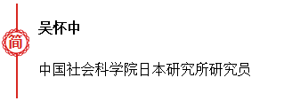

收录于合集


第二次世界大战后日本安全政策 70 年的演变，从其内在动因的逻辑来看，可以说总体上就是一个构建与加强自身安全保障能力的动态过程，即追求“安全保障自主化”、“国防正常化”和“军事大国化”的过程。这是因为，战后日本作为战败国被剥夺了拥有正常安全保障及军事能力的资格，而随着主客观因素的变化，逐步改变这种状况就成了其安全政策力求的目标。可以看到， 在战 后 70 周年的2015 年，日本安全保障指导思想的性质已经发生了巨变 ， 政策范围内可以突破的地方基本已由行政权力推动完成 ， **并且法制 ( 主要是“和平宪法”) 的硬性束缚作用很多已不复存在。**当然，也需看到，日本安全政策的演变，一直受到内外环境制约， 不但过程复杂曲折 ， 而且也有正反两种方向。 这种复杂性及正负相间性所导致的政策变化及其带来的影响，正日益引起人们的关注。
战败国所处的先天条件，注定了战后日本安全政策的出发点是复杂而非正常的。在“和平宪法”与《日美安全条约》两大规范因素的作用下，日本采用了吉田路线这一主流安全政策模式。
( 一) 《和平宪法》与《日美安全条约》的两大规定因素
日本战后安全政策的原型，是作为战败国在20世纪40年代后半期到50年代初的被占领期形成的。由于当时国内外条件的制约，日本从两个特殊前提出发构思了新安全战略，即1947 年施行的“和平宪法”和 1952 年生效的《日美安全条约》。当然，同时期日本还采取了以签订《旧金山和约》实现“片面媾和”、倒向西方阵营的战略选择。
在此之前，从理论上或部分现实性来说，日本在安全政策上至少曾有三个选项: 非武装中立、自主防卫(重新武装、军事大国) 及下述的“吉田路线”。然而，“和平宪法”及其第九条制定后， 日本至少在名义上需把“放弃战争”和“不保持军力”作为新安全政策的前提。并且，“和平宪法”催生了日本一系列的重要防卫基本政策及原则，例如“专守防卫原则”“不做军事大国方针”“无核三原则”“武器出口三原则”等; 同时，还给日本安全政策带来了一个重要特质———法无规定即不可行的法制教条主义， 任何安全防卫重大政策及行为，都需要有明确的法律依据及其准允。 缘其如此 ， 战后日本安全政策演变的基本线索之一，也可以说就是保守政治集团 ( 尤其是民族主义势力和军事现实主义者) 试图以法制改造这一“软件改编”来铺垫“国防正常化”的过程。“和平宪法”制定后，日本政府也曾短暂地考虑过由联合国和地区机构负责其安全保障的安全路线。直到1950 年前后，吉田茂首相还曾多次强调过重整军备的困难性。然而，冷战开始后，朝鲜战争爆发、联大分裂、美国压力日增等外部环境，以及早日实现战后媾和的内需，使日本决策层很快倒向靠美保护路线。 1951 年 ， 日美缔结《日美安全条约》， 条约规定美军承担保卫日本义务 ， 日本则提供基地等服务， 从 而形成了不对等的日美安全关系结构。由此，依赖美国及日美同盟保障安全便成为战后日本安全政策的重要支柱。
( 二) “吉田路线”及日本安全政策主流的诞生
以上两大规定因素，再加上日本国内经济民生压力，使得日本安全政策回调到了一种比较折中、温和的现实方向，这主要体现为时任日本首相吉田茂主导确立的“吉田路线”。该路线并非回归传统权力政治型的现实主义路线， 但当然也不是纯粹的自由理想主义路线， 而是坚持轻军备、安全靠美、重视经济发展的一种国家安全及发展路线 ， 它被认为是在当时非自主条件下比较符合日本国家利益的一种自主战略选择，也是一种广义上的国家安全保障政策。其中，“轻军备”加“安全靠美”的“吉田安全路线”，至少到20世纪90年代，是不断被日本主流政治势力确认并作为国家安全保障的基本路线。
这一时期日本安全政策的特点是“吉田路线”进入全盛期。随着经济复兴等形势变化， 日本政府也迈开了重新武装的步伐，但远没有发展到动摇“吉田路线”的程度。
( 一) “安全靠美”与“吉田路线”的巩固
作为战后日本的基础安全政策，“吉田路线”在 20 世纪 50—60 年代保持了绝对影响力。20 世纪 50 年代日本国内就已出现修正“吉田路线”、适当摆脱美国并谋求自主安全的动向。例如， 鸠山一郎首相推动日本追求与苏中恢复邦交的“自主外交”，以改善因以苏中为敌而险恶的安全环境。20 世纪 50 年代后期， 以岸信介首相为首的民族保守主义势力要求修改《日美安全条约》以提高双方的“对等性”， 而鸠山和岸都力主修改“和平宪法”、重整军备并谋求自主防卫。然而，以追求“国家独立”和“防卫自主”为名的“反吉田路线”，在当时的条件下都遇到挫折。1960 年，岸信介内阁虽与美国签署了新《日美安全条约》，但依赖美国提供军事防卫的日本安全政策基本框架并未发生根本性变化， 他的努力结果是不仅没有废除却反而巩固了“吉田路线”。
**“没有吉田的‘吉田路线’”成为吉田以后历届内阁遵循的国家安全及发展模式。到 20 世纪 60 年代前期， “池田路线”成为“吉田路线”的可靠延续和补充: **一是放弃通过修宪及重整军备成为“真正独立国家”的道路; 二是否定“亲社”及中立路线， 提出“日美伙伴关系”口号并继续强化亲美路线以确保安全。到了20世纪60年代后期，佐藤荣作首相出于经济及军力建设的成就感，虽曾表示要“自己保卫自己”，但当时的日本政治主流还是认为，维持日美同盟比扩充军备更能抵御威胁。因而，这一时期佐藤内阁不但制定了“无核三原则”及“武器出口三原则”等日本安全防卫的有关基本政策，还在60年代末通过对美协调实现了冲绳回归及国家主权完整， 这些都说明了当时日本安全政策的实际情况和指向。
( 二) 小步重新武装、渐增安全防卫能力
20世纪40年末50年代初，日本政府虑及恢复经济与内外舆论，起初曾采取反对重整军备的立场。1950 年朝鲜战争爆发后，根据美国指示并经过讨价还价，日本在50年代早期组建了警察预备队( 随后改称保安队) 和海上警备队，并归到1952年成立的保安厅( 防卫厅的前身) 管辖。1954 年，日本正式成立了自卫队和防卫厅。在这一过程中，日本以“非军队”作辩称， 来尽量模糊日本重整军备与宪法第九条之间的矛盾。但是，吉田茂所谓“作为独立国家当然要拥有卫国的抱负，如果国力允许的话则想立即拥有军队”的言论，应该是反映了当时及其后的日本统治阶层的真实想法。同理，日本政府一开始曾否定自己可以行使自卫权，但到1954年成立自卫队时就已变成公开声称有条件承认自卫权。
很明显 ， 日本的打算是以依赖美军为主 ， 同时不断小步重整军备，逐步提高自主安全保障能力。在防卫架构及体制上 ， 日本于 1956 年成立了“国防会议”，1957年制定了“国防基本方针”———强调根据国情在自卫限度内逐渐构建防卫力量，同时以日美安保体制为基调来应对威胁等。从1957年到1971年 ， 日本政府还制定了三次 “防卫力量整备计划”，在各种限制中逐渐发展有限军备，以建立在日美安全体制下应对“局部常规战争以下侵略”的防卫基础和态势。
到 20世纪60年代末期及70 年代初，日本已成经济大国，有了初步尝试强军的政治冲动与国力基础。70 年代后期到 80 年代中期，国际危机四起，美苏“新冷战”爆发，日本借机欲在同盟及西方阵营内分担更多责任和作用，在安全政策上有所作为。日本的安全政策思路较以前大为拓展，在提出“综合安全保障”战略的同时，还开始以积极自主的外交作为来改善涉日国际安全环境。可以看到，在依然面临制约和界限的条件下， 日本这一时期的安全政策以对抗苏联威胁为目标，强调 “西方一员”立场并努力扩大日美防务合作，切实考虑增强自身防卫力量，开始显现突破专守防卫的“大国化”政策倾向。
( 一) 冷战新局面下的自强尝试与借美强军
从20世纪60年代末开始，美国实施全球战略收缩，一再强调盟国应承担更多的自主防卫责任。与此相呼应，1970年出任防卫厅长官的中曾根康弘开始公然鼓吹“自主防卫论”及扩军抗苏，提议以“自主防卫五原则”取代“国防基本方针”，并提出了大规模的“四次防预算计划”。不过，随着中美和解与国际形势趋缓，“四次防”预算大幅缩水，中曾根等激进派“国防族”推动的自主防卫政策随即流产。
**20 世纪70年代末期美苏之间“新冷战”爆发后， “苏联威胁”加剧导致美国对日需求增加， 成为日本国家安全政策转变的契机。日本借机强军、出海，谋求更大的军事安全角色和作用。**首先， 日本开始采取“攻势防卫”战略，突破了“专守防卫”的原有内涵。1976 年制定《防卫计划大纲》和 1978 年出台《日美防卫合作指针》后，日本政府明确“以苏为敌”， **提出确保海上交通线安全的 “海上歼敌”和“千里海防”方针，在军事方针上实现了由消极防御向积极防御、遏制防御的转变。**其次，调整“基础防卫力量构想”，增加防卫费用、发展威慑力量， 重点加强海空军建设。1985年，防卫厅主导的“中期业务计划”升格为政府的“中期防卫力整备计划”( “中期防”) 。1987年初，中曾根内阁决定撤消防卫费占国民生产总值 1%的框架，1987—1989年间日本的防卫费连续三年突破“防卫费不超过国民生产总值比例 1% ”的限制。
( 二) 加强日美同盟关系及防务合作
20 世纪 70 年代国际形势动荡，在应对苏联威胁上日美各有所需。日本采取积极措施加强对美安全合作，双方于 1978 年制定了《日美防卫合作指针》。指针明确了双方相互防卫分工和合作，规定日本主要承担本土防御及海峡封锁，而美国负责提供“核保护伞”、应付战略进攻。
**20 世纪 80 年代后，为进一步应对苏联威胁，日本着力强化日美同盟的军事性质与作用分担( 尤其是与美国“分担”远东防务责任) ， 提升同盟的可靠性和可操作性。**1981年，铃木首相访美时对日美关系尝试使用“同盟”概念并提出协美“千里海防论”。1982 年，大平首相在访美时首次正式把美国称为“盟国”。1983年中曾根首相访美时发表了日本“不沉航空母舰论”“日美命运共同体论”。同时，日本政府还明确“西方一员”的战略及安全定位，在维持东西两大阵营军力对比中发挥相应作用。 日本此阶段的安全政策明显带有参加西方集体防卫、共同遏制苏联的战略指向。
( 三) 开始注重“综合安全保障”
**20 世纪 70 年代后，日本开始认识到自己在复杂国际环境中的脆弱性，以及实施不仅包括军事、还应包括经济资源在内的“综合安全保障”政策的必要性。**1973年的石油危机给严重依赖石油进口的日本带来极大震惊和冲击，1977年福田首相在施政演说中强调确保资源和能源“具有安全保障的重要性”。从 70 年代后期到80 年代初，日本政策界和学界开始正面讨论综合安全保障政策的必要性。1979年，大平正芳担任首相后，将综合安全保障逐渐上升为官方政策，主张日本在坚持《日美安全条约》和有节制的高质量自卫力量以外，还要搞好经济等各项内政事务，加强外交努力，以便综合地谋求日本的安全。1980年成立的铃木内阁继承了大平的政策方针。日本政府对综合安保的重视还体现在对国内安全指导体制的改造升级上。1986 年，负责国家安保事务审议的“国防会议”改编为“安全保障会议”。
( 四) 以积极外交改善安全环境和态势
为确保安全环境，日本在 20 世纪 70 年代错综复杂的国际形势中开始推动初步的自主外交。其时，美国进入战略收缩期，而石油危机冲击了战后日本繁荣( 广义上也是安全保障范畴) 。 日本试图通过地区合作与和解、国际协调来争取改善宏观安全环境 ， 例如，实现中日复交及签订《中日和平友好条约》、对东南亚提倡“福田主义”、扩大“政府发展援助”( ODA) 、推进日本在泛亚太合作及西方七国首脑会议( G7) 中的作用等。
1979 年，苏联入侵阿富汗，美苏进入“新冷战”时期。80年代日本致力于由经济大国转向“国际国家”，试图借此取得全球范围内政治外交上的领导地位。 **与此相应，为应对苏联威胁， 日本展开“国际国家外交”，除了推动亚太经济合作( 当然也有对苏经济斗争的成分) ， 还着力强化日美同盟及西方统一战线，维护共同安全。**例如，大平首相以“西方一员”的身份表明日本立场， 并对外实施“战略援助”; 铃木首相则首次对外表示日美是同盟关系; 中曾根首相则推动与美结成特殊盟友关系，并在西方七国首脑会议上首次超越经济领域主导全球安全议题。并且，为联合对苏，80年代日本并不排斥日美中协调并结成某种程度的抗苏准联盟。
冷战结束后的 20 世纪 90 年代前期，日本经济实力达到顶点，开始构想日美欧主导的世界秩序， 此时国际局势发生动荡而周边安全环境大幅好转。所以， 冷战后日本安全政策的注意力和主攻目标首先转向国际贡献，意图占位拥权、增加影响。与此形成对照的是， 90 年代中后期，朝核危机与台海危机并发，中盛日衰势头显现，日本开始关注周边安全并制定相应对策。同时，日本还主要就自身防卫能力建设及态势调整、巩固日美同盟进行了部署。
( 一) 90 年代初期: 国际贡献是政策摸索方向
如上所述，在冷战后的新环境下， 本力图积极参与构筑冷战后国际安全新框架，并在其中占据有利的战略地位。这个时期日本安全政策调整最显著的具体动向，是朝着自卫队走出国门、积极参与构筑国际安全秩序的方向开始迈出了历史性的一步。日本首先确定了推动自卫队在联合国框架内走出国门的目标，并在 1992年制定了首次可以将自卫队派遣到海外的“联合国维和行动合作法( PKO 合作法) ” 让自卫队以参加联合国维和行动的形式来做出“国际安全贡献”。
( 二) 90 年代中期: 稳固日美同盟，适调防卫政策
**1. 稳固日美同盟、调整经略方向。**日本一度因冷战后国际安全形势好转而开始自主探索多边安全合作之道。然而，日美双方很快意识到维持同盟符合双方利益。从 1994 年前后， 日美开始定调磋商并于 1996 年发表《日美安保联合宣言》，再到 1997 年《日美防卫合作指针》的出台， **日美同盟经历了从 “漂流”到“再定义”的过程，这个转换过程也意味着日本逐步放弃了探索“多边安全合作论”和“适度脱美”路线。**同时，这也标志着日美同盟从以保卫日本为主要目的双边合作转变为介入亚太地区安全事务、包括应对“周边事态”的日美具体军事合作的安全机制，美日同盟关系的性质由此发生了重大变化。
**2. 调整冷战后的防卫政策方针。**1995 年，日本制定冷战后首份《防卫计划大纲》。相比 1976 年的旧大纲，它虽宣称将沿用“基础防卫力量构想”，但更强调保持合理、精干而高效( 而不单单是被动的) 的可靠防卫力量、充实和加强日美安全体制，同时也发出了协美应对周边事态的信号。另外，以该大纲出台为标志的政策动向还包括日本开始调整军事部署和防卫方向: 使防卫态势“均衡化”，由重视对付“北方威胁”转为逐渐提高对“西南威胁”的警戒。也正是从此开始， 日本意识到需要把防务重点逐步转向中朝方向。
( 三) 20 世纪 90 年代中后期: 初构周边政策，戒备潜在威胁
**从 90 年代中后期开始，日本一系列的安全防卫政策调整都指向周边地区的中朝两国。**1995 年的《防卫大纲》、1997 年的《日美合作指针》、1999 年的《周边事态法》，都证明日本判断威胁及制定对策在指向可能发生的“周边有事”。因此，日本通过积极推动日美扩大军事合作领域和范围等系列措施，加强对周边安全保障的相关应对能力。 可以说，为应对以中朝为目标的周边潜在威胁，日本首次主动开始规划自己的系统性地区安全政策，通过加大对周边的投入力度来确 保自己的安全。
总的来说， 21 世纪初期日本的安全政策内容及可能的走向是由国际及地缘政治重大事态，以及国家战略及对外政策等内外综合因素决定的。例如，前者有2001 年“9·11”事件的发生、全球金融危机后中国持续崛起，后者可见日本在应对这些“危机”的同时加速推动“国防正常化”及“军事大国化”进而全面完成日本的大国化进程等。“9·11”事件为21 世纪初的全球的安全保障奠定了一种基调，显示了一个清晰的时代潮流及倾向。由此开端，诸多非传统安全及全球性问题开始造成国际安全环境日益复杂化和动荡化。如此客观环境再加主观因素， 使得 21 世纪初日本安全政策的目标之一就是维护和改善国际环境，介入国际安全事务并发挥相应的大国作用。同时，以中国持续快速崛起及朝核问题为代表，日本认为自己的地缘战略及安全环境不断加剧恶化，需要针对以“中国威胁”为核心的周边传统安全问题拿出应对之策。
如果对 15 年来日本安全政策调整的轨迹和指向进行概括，或可表述如下:
**1. 在最初几年，注重国际，兼顾中国。21 世纪初，随着跟从美国进行全球反恐、积极参加国际安全保障、自卫队走出国门且日益行远，日本安全政策国际化、外向化的特征愈发明显。**从 2001年小泉内阁通过《反恐法》到 2007 年福田内阁再次强推《新反恐法》，这个政策过程时有强弱但一直持续不断，为此配套的日本安全法制、体制和力量的建设也不断跟进。与此同时， 日本因受中国发展崛起冲击而产生某种危机感， 开始构想一定的实际措施 来加以应对。然而，“9·11”事件后，由反恐而生的国际大局是“日须协美”而“美需中协”，所以日美两家在对华战略上保持了基本一致，即对于尚未严重的“中国威胁”采取如下对策: 第一， 先期发出警示信号，如在日美多次“2 + 2”会议上制定涉华共同战略目标; 第二，宣示采取防范措施，如在2004 年《防卫大纲》中提出“岛屿防卫”但缓推落实举措; 第三，启动对冲型防备计划，如从 2003 年开始并在 2007 年基本完成日本反导计划等。
**2. 2008 —2013 年，注重中国，兼顾国际。2008 年后中国加速崛起，特别是经过 2010 年“撞船”及 2012 年“购岛”事件的发酵，中日关系持续紧张，日本终下决心将其安全政策的重心锁定在应对“中国威胁”上。**2010 年，民主党政府出台的《防卫大纲》，提出以“动态防卫力量”构想加强西南群岛防卫。② 2013 年，安倍内阁出台的首份《国家安全战略》及新版《防卫大纲》，以构筑“统合机动防卫力量”挂帅，配之以陆海空立体举措，真正开始坐实针对中国的西南群岛防卫系统工程。当然，同期日本政府主要是民主党政权( 2009—2012 ) 也显示出在国际和平合作方面的积极性，如对阿富汗提供巨额援助、参加海地维和行动等。
**3. 2013 年后，同时注重国际安全及周边安全的双轨路线。**2012 年 12 月，安倍第二次上台后提出“积极和平主义”及“全球战略外交”，积极推动日本以各种方式为国际安全———包括对有空天海网组成的国际公域及高新边疆的安全保障做出更大贡献。安倍内阁在 2013 年 12 月主导制定的首份《国家安全战略》中有八成左右的内容涉及国际问题，这也应是日本国际安全政策的最新动向及阶段性顶峰。同时，直至2015年安倍也在以增加预算、加快部署来落实安全防卫政策中的对华措施。 **安倍推动的这种 “两线正面应对”路线，是战后日本安全政策的首次尝试。**为此，安倍推动了庞大的配套建设工程，在安全及防卫法制、体制编制、战略及政策、力量建设与态势部署等各有关领域都取得了突破性成就。应该说，这些成就比起战后60多年其历届前任的相关业绩总和还要巨大。
**21 世纪初期的日本安全政策以改善国际环境( 应对非传统安全和全球性问题等)和应对周边安全威胁( 主要是应对所谓的中朝威胁) 为两大目标，较之以往，明显有更加系统、积极的措施来落实目标。这些措施可以分为以下四大类: **( 1) 推动自主自强路线，全面提升自身安全保障能力。首先，从事涉国内安全及战争动员的“有事法”、“保密法”，到为自卫队远赴海外行便的各种“特别措施法”，再到推动通过有关自卫队动武权的集体自卫权法制等， 日本大幅改造并健全了“安全保障正常化”与“军事大国化”所需的法律体系; 其次，基本制定并完善了指导安全保障及防卫建设的战略及政策体系; 再次，在安全防卫的体制编制整合及力量建设上，日本已搭建从中央往下的各级统筹协调机构，建立了高效、集中的安全事务决策体制以及作战指挥与情报体系，同时大幅提高了自卫队遂行远程作战、大型作战及联合作战的能力。除此之外，安倍第二次上台后还高调提出要强化支撑国家安全的各种国内基础。( 2) 强化并革新日美同盟，在日本周边深化合作，在国际安全领域拓展合作，同时大幅提高双方的联合行动及军事一体化能力。( 3) 积极开展国际及地区安全合作。包括参与国际反恐、维和、打击海盗及防扩散行动，以及加强与澳大利亚、印度、韩国、东盟、北约的安全合作与交流，同时加大对地区安全组织( ARF、ADMM +等)的参与及影响力度。( 4) 以系统持续的外交努力，弥补军事能力的不足，改善总体安全环境。21 世纪以来，历届日本政府展开的“价值观外交”及“民主同盟外交”、“海洋外交”、“战略性外交”暨“俯瞰地球仪外交”、“发展援助外交”等， 实际都与其安全保障政策有关。
纵观战后日本安全政策 70 年的演变史，可以看出其总特征是“大国化”“正常化”， 以及作为此二者外延的“外向化”的一个进程。同时，在政策的规划及操作上，日益可见其自主性、战略性、系统性、全面性的演变趋向。
**这些特征及趋向也可从战后日本安全政策的出发点 ———“吉田路线”的角度加以审视和梳理。**冷战时期，日本的安全政策基本上是在“吉田路线”规定的“日美同盟 + 轻武装”的轨道上运行，即便在发展自主防卫力量和推动日美同盟合作，进而在推动大国化安全路线方面取得了某些进展，但这些进展也主要是政治性的和宣示性的，并没能使日本实际扩大多少军事作用。冷战结束后，日本的安全政策因开始主动“外向化”而逐渐变质。即便如此， “吉田路线”的主要思路仍然存在，日本在安全上全面依赖日美同盟并且没有追求“重武装”， 发挥国际安全作用也选择了联合国主导的维和活动。 然而，从 20 世纪 90 年代中后期开始， 特别是进入21 世纪后，日本走“正常国家”道路，以实现“政治大国”与“军事大国”为目标的国家战略逐步确立， 其安全政策开始向“日美同盟+尽量重武装与自主防卫”的方向发生质变， 到了安倍第二次执政时则演变为“出发点是要靠自己、现实中则依靠并主动利用日美同盟”的政策思路。并且，在参与国际安全事务及应对周边威胁之际，日本已逐步向摈弃战后和平主义并成为“能战国家”的方向大步转化。
在与世界其他主要大国的对比中，可以总结出战后日本安全政策另外一些 特点：
第一，日美同盟及日美安全关系具有结构性的规范作用。尽管日本一直在追求同盟的对等化、双向化，但其现实的安全政策无疑受到美国因素的主导，日美同盟是政策基轴，美国的全球及亚太战略动向对日本安全政策走势往往具有结构性影响。反之而言，国际体系及格局变动对日本安全政策的影响远没有对他国的那么大。
第二，国内政治的影响无处不在。与他国相比，日本安全政策与国内政治密切相关。包括宪法原则、和平思潮及社会生态、国内政局变动、甚至领导人个性等因素， 常会对政策调整产生很大的影响。
第三，国际安全保障的权重很大。在政策任务中，国际及地区安全保障所占比重远远大于国内安全保障方面，日本本土几乎没有中美俄等大国那样的国内安全隐患。冷战后日本安全政策的演进或突破，往往是以“先外后内”“以外促内”“以美制内”的路径推进的。2013年， 安倍内阁出台的《国家安全战略》，以其内容篇幅来说几乎成了一部“国际安全保障战略”。
第四，政策思想及理念曾有时代领先性，但日益减少。日本在安全政策理念及目标上较早重视经济安全、“人类安全”、环境安全等非传统安全问题。因而，在政策手段上也注重非军事措施的运用， 包括较早提出“综合安全保障”概念。日本安全政策在纵向演变上是不断“现实主义化”和“正常化”的过程，但在与他国比较中，仍有一定国际政治意义上的自由主义及和平主义色彩，如对使用武力等仍存有自我设限和克制等。
第五，政策的主观性与矛盾性非常明显。日本安全政策的调整与客观安全环境的变化并没有必然的逻辑关系，相当一部分动力来源于其国家战略目标及美国的要求，而“威胁”的很大一部分是因其自身的主观认知及战略选择(包括“随美”) 造成的。
第六，“中国因素”已成重中之重的安全议题。从 2010 年前后开始，日本将崛起的中国视为其 21 世纪安全及外交政策的最重要课题，以及实际上的头号威胁源，并且与之前不同， 开始切实采取种种措施来应对这一“威胁”。 当前日本的传统安全保障政策目标，几乎都是围绕中国展开的。世界各大国中，在安全政策上如此全方位重视中国的 ， 恐怕只有日本一家。